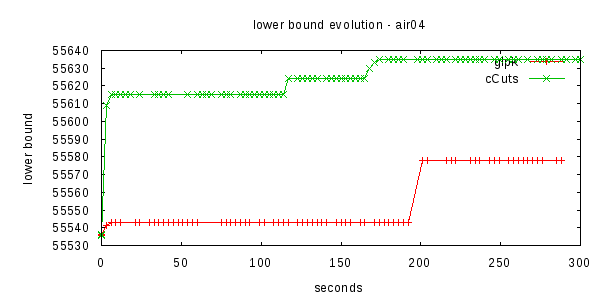
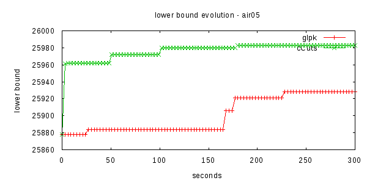

This is the page where I soon will release the code for cut
separation routines.
As of January 2010 implemented features are:
Right now I'm performing experiments to automatically select suitable parameters (max passes, max depth, etc...). Without any tuning, the code is already giving interesting results. Bellow are depicted results for the hard problems air04 and air05 from MIPLIB. These graphs show the evolution of the lower bound in these instances. Line glpk shows the improvement of the lower bound using glpk without any cuts, using BFS. Line cCuts shows the same glpk executing including the generated cliques from the new separation routines. Executions where limited in time to five minutes (300 seconds).
